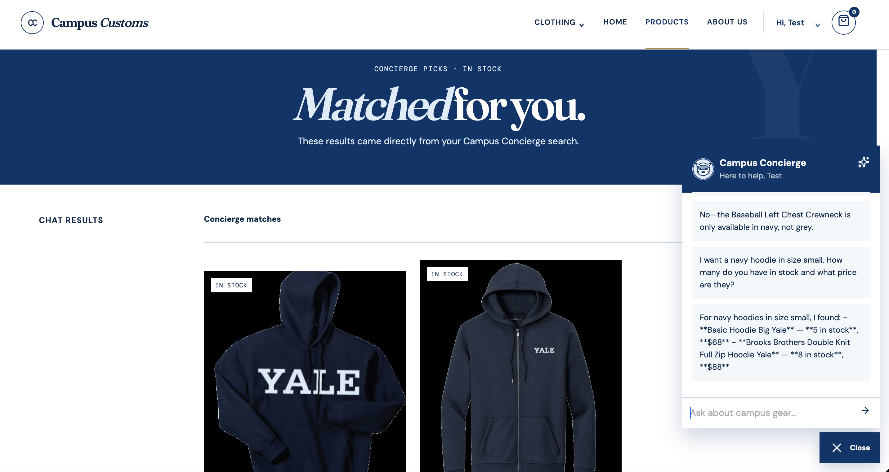
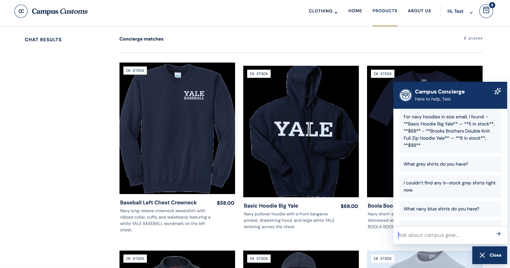
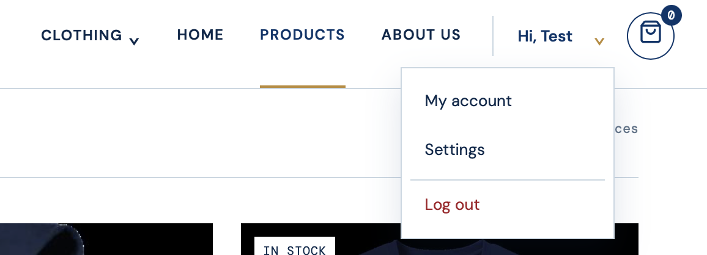

App Check
Check #1: Inventory Level (Stock and Price)
The screenshot shows the Campus Concierge returning database-backed stock quantities and prices for the requested navy hoodies. It also proves that the matching in-stock products were dynamically loaded into the Concierge picks page as product cards with product imagery and inventory badges.

Check #2: Dynamic Search-Result Cards
The screenshot shows the site automatically rendering six in-stock navy catalogue matches in the Concierge matches grid after the shopper’s search. Each result includes an image, product name, short database-backed description, price, and stock badge.

Check #3: Account Menu and Settings — Usability
The screenshot shows the signed-in shopper’s dropdown opened from the username caret. It provides direct links to My account, Settings, and Log out, making account management and sign-out easy to find.
